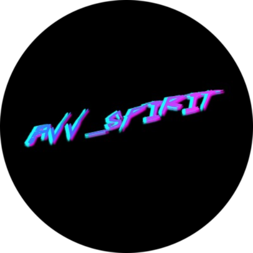

Web
Projects:

Первый проект Sedona
Учебный и единственный не адаптивный у меня. Самый первый курс по верстке был именно с ним. В агусте 2018 я только начал познавать html и css. Интересный и привлекающий взгляд с точки зрения дизайна макет, который выделялся очень сильно, и у ребят из html academy, по статистике, он пользовался особой популярностью, хотя другие, более привычные макеты, в виде магазинов, куда больше вписываются в реалии, чем Sedona. В данном макете всего две страницы, главная и гостиницы, остальные просто пустышки, статичные в 1200px, на примерах этих страниц преподаватели и наставники показали стандартные техники реализации блоков на flex'ах и построение сетки. На этом уровне нас научили пользоваться фотошопом, как разработчиков, чтобы доставать всё нужное из макета. Для работы с системой контроля версий - Git, мы использовали GitHub Desktop, использование консоли на этом уровне не в ходило в ТЗ. В целом, можно было сделать "резиновую" верстку, но на тот момент я побоялся иметь дело с процентами, так как мне это всё казалось очень сложным, а вот второй макет, адаптивная Sedona, как раз уже идет с неким подобием резиновости, но он все же был просто адаптивным, к нему и переходим ниже.)

Adaptive Sedona
Второй проект на втором уровне верстки в html academy, намного интереснее, сложнее и красивее, но самое большое отличие не в красоте, а в сложности исполнения, так как в этом проекте мы использовали смешанный БЭМ, препроцессоры и адаптивную верстку, то есть адаптацию под мобильные и планшетные устройства и только использование консоли для работы с Git, что было обязательным условием выполнения и защиты проекта, в отличие от первого уровня верстки. Здесь уже все страницы в хедере имеют наполнение и почти законченный вид для верстальщика. На этом же проекте было по желанию использование процентов для "резиновой" верстки, я их не использовал снова, так как боялся не успеть в срок сдачи, однако, это мне не помешало получить 92% баллов за выполнение проекта. Единственное, что я в нём не доделал - это был SVG спрайт, который я отдельно уже реализовал в своих учебных целях в других проектах, но так и не вставлял его в готовые билды для финальной сборки, так как незачем использовать целый спрайт для небольшого количества иконок/картинок. Так же мы использовали ретинизацию изображений и научились пользоваться сборщиком Gulp, писать скрипты для него, ну и немного JS, чтобы реализовать базовые открытия popup формы, меню на мобильной версии и скрытие формы без перезагрузки браузера с заполнением в кэш информации для формы. В дальнейшем ты был волен доделать как угодно свой проект после сдачи.
Uminited
Макет знакомой дизайнера, которая дала мне его для работы в портфолио, чтобы научиться новым техникам и решениям. Сам проект был уже готов другими людьми, но я его сделал в своей версии. В конце 2018 я взялся за его реализацию, но закончен он был в 2019, так как я неспешно над ним работал. В нём я уже использовал "резиновую" верстку вместе с адаптивной, подключил библиотеку jQuery для того, чтобы понять как она работает и плюсы её перед JS, гораздо проще, нежели топорный JavaScript, но имеет свои ограничения. Реализовал открытие/скрытие попапов, формы с таблицей, кнопку "вверх" на jQuery. Данный проект был интересным одностраничным решением, в том числе с использованием градиентов для своеобразного обхода некоторых трудных моментов с css.
Дарья Воронина
Дизайнерский лендинг для прокачки своих навыков, взял из рассылки в своей школе, на которую подписан. Тут я уже по полной использовал проценты, резину, адаптив и кучу мелких псевдоэлементов, якоря на блоки из хедера. Добавил страницу Портфолио, которой изначально в макете не было, чтобы реализовать галлерею фотографий под различные устройства, я использовал очень популярную FancyBox, которая при должном использовании дает широкий спектр реализации галлереи у себя на сайте. На главной странице использовал якоря на блоки, фиксированное меню, вставку документов для скачивания с сайта. В проекте всё так же тянется и подстраивается.
Тестовое для SberCloud
Именно этот проект, можно сказать, у меня зажег пламя внутри, чтобы его сделать, так как появилась возможность реализовать все свои знания по полной. Я его сделал за 13 часов с нуля, так как требовалось три дня на его реализацию, а я уезжал на следующий день в отпуск, когда подобные задачи неспешно делал в течение нескольких месяцев. В итоге, допустил простые ошибки в виде вложенности тегов а в p, не доделал реализацию карусели, вкладки при перещелкивании департамента, что на данный момент уже реализовано. Я сделал версию в дизайн, так как не успевал, та версия которая на данный момент представлена является топорной для своей реализации с простыми цветами и прочим, хочу заметить, что предупредил ребят, что не успеваю сделать это все, но в итоге мне отказали).

Adventure-AVV
Ну наконец-то!
Собственный сайт, который начал реализовывать сначала на бумаге в 2019 и закончил вот, именно под 31 декабря 2020, чтобы закрыть этот год, да ещё как, потому что он не очень для всей планеты Земля)
Выбирая цвета и дизайн для сайта я вдохновлялся таким крутым сайтом для художников, как ArtStation, а так же тематикой Cyberpunk 2077, неон и все подобные вещи были мной сделанны именно под воздействием этих двух грандиозных проектов. А, так как я ещё являюсь начинающим 3D художником, мне тоже очень близка эта тематика. Ну да ладно, расскажу об идее.
Сначала я нарисовал шапку сайта, футер и расположение основного контента, была идея сделать боковое меню и добавить фотографии, но я отказался от этой идеи, в итоге вы видите всё то, что я решил воплотить в жизнь. Идею с неоновым текстом подсмотрел на YouTube, немного повозившись с дизайном и цветом остановился на той цветовой гамме, что сейчас есть, ах да, чуть не забыл, оранжевый цвет использованный на данной странице WEB полностью совпадает с цветом наручного HUD из Fallout.
Сайт полностью "резиновый", я старался не ограничивать центральные блоки для страницы, а так же для различий в визуале сделал разную ширину на всех страницах. Добавил анимаций с тексом в виде мерцающего неона на псевдоэлементы и текст, подсмотрев, реализовал в JS очень известную фишку, как самопечатающийся текст вверху данной страницы. Во всех разделах, сначала, я хотел добавить фотографии в background, но затем просто решил ограничиться любимыми расцветками в виде градиента, просто и довольно интересно, подстать дизайну в целом.
Резюмировать хочу тем, что в дальнейшем сделаю несколько обновлений версии сайта для контента и переделки на фреймворке React, который сейчас учу, полностью его сделаю компонентным, с магазином, админкой и, возможно, новостями или блогом. Сейчас первая версия 1.0, в течение января перепишу некоторые моменты в JS, добавлю реализацию с шаблонами, подгрузкой через json и так же добавлю форму отправки с сайта для связи со мной. Все апдейты помечу в данном описании с пометкой UPD.
See ya!)))